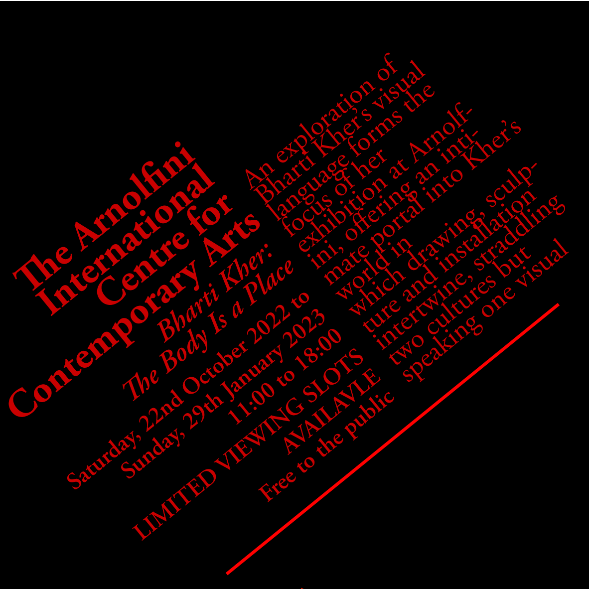

Hello, and thanks for clicking on my page to look at my work!
CARP Task Work
For this task, we had to come up with 3 poster designs for the Bristol Balloon Fiesta, and one final design. Here is what I came up with.
Poster 1
Poster 2
Poster 3
Typography
Here are the examples that I made to demonstrate each of the 8 typographic systems.

Coding
Here are the outcomes from the coding worksheets we had to complete. You will see the code and end result.
Reflection
About
Thank you for viweing my work! I'm Joe, a first year Digital Media Student at UWE Bristol. I love graphic design, coding, animation, basically anything digital! This my website for Graphic and Web Design Studio (GWDS), which has all the important bits of work I have done for my first semester at UWE in this module.